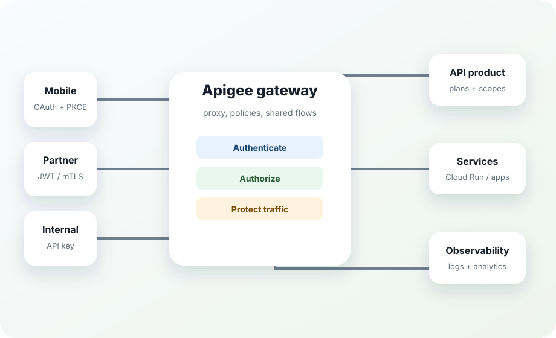

Beginner to expert, built for delivery teams
Learn Apigee by building a secure API platform, one production pattern at a time.
This training site is structured as a 15-instruction-day, 3-week cohort with REST/RFC foundations, a full Apigee X setup day, labs, proxy code, policy recipes, security patterns, reviews, and a graduation proxy aligned to high-security financial API expectations.

Training promise
Everything learners touch becomes reusable platform collateral.
The cohort moves from API proxy fundamentals into OAuth, JWT, quotas, shared flows, observability, CI/CD, OpenAPI products, threat protection, high-security FAPI-style patterns, and operational readiness.
Open banking style APIs
PAR/JAR/JARM concepts, sender-constrained tokens, mTLS/DPoP decisioning, non-repudiation, consent correlation, audit trails, and fail-closed policy choreography.
External partner APIs
OAuth 2.0 client credentials, JWT validation, product scopes, quotas, spike arrest, schema validation, and partner onboarding.
Internal and public APIs
API keys, CORS, basic threat protection, response shaping, caching, and pragmatic analytics for low-risk APIs.
Learning velocity
Competency heatmap
Each week deliberately shifts the weight: week 1 builds fluency, week 2 adds production controls, week 3 sharpens architecture judgment.
Week 1Week 2Week 3
Proxy design
Policy fluency
Security architecture
CI/CD and ops
Troubleshooting
Build, deploy, test, trace, and explain every part of an API proxy.
Set up Apigee X, then layer identity, traffic management, mediation, reusable shared flows, and analytics.
Design tiered security, open banking controls, CI/CD, incident handling, and the final integrated proxy.
Format
Built as an instructor-ready website.
Every page is usable during delivery: agenda cards for day-by-day teaching, code blocks with copy buttons, decision matrices for architecture debates, and checklists for learner validation.
Review the security pattern library